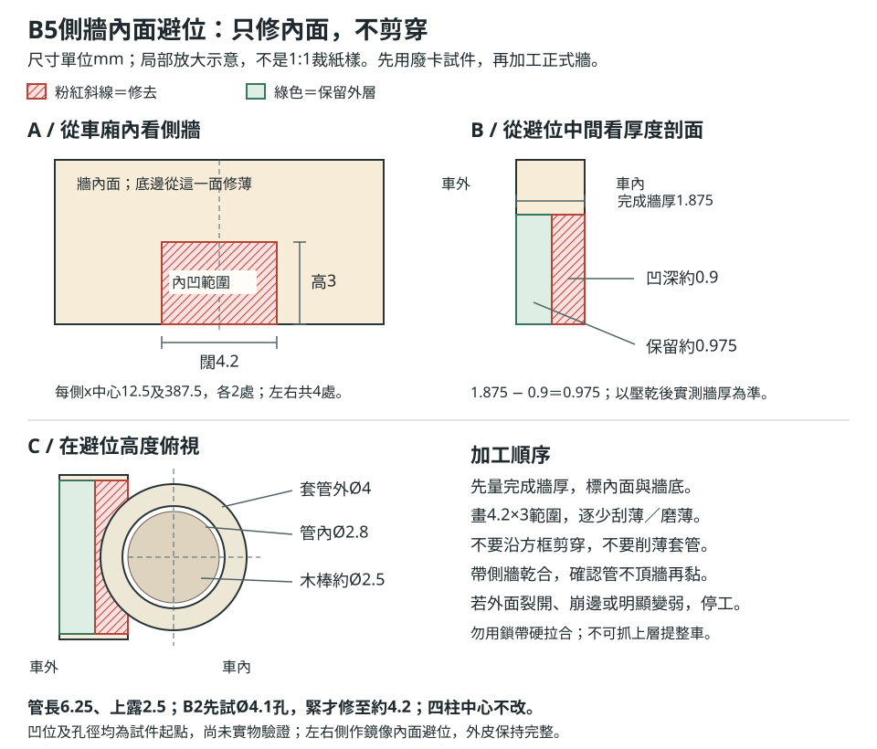

照次序製作。
逐項勾選。
本清單配合40厘米版的37頁紙樣及73種零件索引使用，按全人手製作安排，可列印後逐項勾選。車身400×87.5×140.625毫米，上層64席、下層40席，司機椅另計；保留立體座椅、12級樓梯、可拆上下層、活動門和可取車頂。
所有尺寸以毫米計。這是未經實物試製的模型方案，請先試材料與接頭，再批量裁件；數學小數位不代表人手切割精度。40厘米及64厘米的裁片不能混用，已公開的64厘米網站不是本清單所用紙樣。
篩選只隱藏勾選項；尺寸表、組裝說明及提醒仍會保留。
使用方法與工作記錄
分袋保存，不混用版本
先分類，再逐批取件；地板及牆的疊層數須依實際卡厚重算。
小圖只作零件識別及組裝示意，不是1:1紙樣。紅線／淡紅黏翼示黏接，圓點按圖說識別定位或固定點，綠箭示取放方向；裁切尺寸以原尺寸紙樣為準。
紙樣上的P01–P37是圖冊頁碼，篩選分類後，打印機顯示的頁序可能不同；以圖上P編號為準。先完成本階段的檢查，再進入下一階段，不要把全部紙樣一次剪完才發現材料太厚。
- 準備3個零件盒或袋，寫「下層」「上層」「車頂／外觀」。
- 另設「試件／備件」袋，合格試件可以計入正式數量，不合格試件不可計入。
- 每片不顯眼位置寫零件編號、車頭箭頭及上／下／左／右；避免在透明窗片中央寫字。
- 每組完成後才在本清單打勾；未乾透或未試合的零件標「待驗」。
| 記錄項目 | 填寫 |
|---|---|
| 硬卡實測單層厚度 | ________ mm |
| 地板疊合方法及完成厚度 | ________ ／目標3.75 |
| 牆、車頂及門疊合方法及完成厚度 | ________ ／目標1.875 |
| 定位木棒實測直徑 | ________ ／目標約2.5 |
| 套管內／外徑 | ________ ／ ________ |
| 座椅試件是否計入52組 | 是／否 |
| 打印100毫米尺實測 | ________ mm |
不要直接照原層數疊1.5毫米硬卡。 本版尺寸表的疊層裁片數以0.9375毫米卡為理論基準；實際卡厚不同，須按目標完成厚度重算層數。地板、橫肋和輪目標3.75厚，牆、車頂、活動門、承托條及U框目標1.875厚，J3補強塊另按12.5高疊合。
紙樣校準與優先列印
小圖只作零件識別及組裝示意，不是1:1紙樣。紅線／淡紅黏翼示黏接，圓點按圖說識別定位或固定點，綠箭示取放方向；裁切尺寸以原尺寸紙樣為準。
先印試件頁
- P22：S1–S4雙人座，用來測摺痕、紙厚及3.125黏翼。
- P20、P21：J3補強塊、J12木棒及J13套管，測定位接頭。
- P26：F1收費器，測薄卡紙盒摺合。
- P24：T1／T2樓梯，測12級總高及風琴摺向。
確認列印設定
- 選A4橫向、100%／實際大小，關閉「配合頁面」與頁首頁尾。
- 不設62.5%；這套紙樣的模型圖形已經縮小。
- 實測每頁100毫米尺及10×10毫米方格；不準就重新設定列印，不沿錯比例描卡。
- 黑實線裁、紅虛線摺、綠點線定位、灰區黏合；透明片只剪外線，內窗線不剪。
- 用鈍工具壓摺線，不把摺線割穿；木棒和飲管是實物切長，不用紙片替代。
拼長件母版
| 完整母版 | 紙樣頁 |
|---|---|
| B1下層地板 | P01＋P02 |
| B2上層地板 | P03＋P04 |
| B3下層左側牆 | P05＋P06 |
| B4下層右側牆 | P07＋P08 |
| B5上層左右側牆，同一母版描兩側 | P09＋P10 |
| B10車頂 | P11＋P12 |
| J1側承托長條、R1車頂長裙邊 | P16＋P17，各自拼好 |
- 兩頁按10毫米重疊，對準十字和外形線，再用薄膠帶黏紙樣。
- 核對B1–B5、B10及J1完整長400；R1是392.5，不能拿J1代替。
- 拼好的紙樣描到完整硬卡；紙樣分頁不等於硬卡要分成兩段。
- 若手上卡紙沒有400長，先選更大張材料；若要拼卡，另試接縫補強及平整度，不以紙樣重疊代替結構接頭。
先做試件，暫不批量裁
試一組座椅
S1／S2各1，S3／S4各2。灰紅黏翼先試黏，確認座面高10再批量裁。
試一個定位接頭
J3底部留實卡，J12埋11.25露5；J13只黏管外，管內不進膠。剖面橫向為示意。
試薄卡盒
F1收費器：先摺四側，黏側縫，再封上下蓋。成盒8.75×10×17.5。
試12級樓梯
T1兩片＋T2一條，升高66.25等分12級；T8在正式裝車時才固定。
小圖只作零件識別及組裝示意，不是1:1紙樣。紅線／淡紅黏翼示黏接，圓點按圖說識別定位或固定點，綠箭示取放方向；裁切尺寸以原尺寸紙樣為準。
一組雙人座：P22
- 裁S1一片29.375×34.375、S2一片29.375×25、S3兩片16.25×13.125、S4兩片直角邊3.75的三角撐。
- S1按16.25座面、15背板、3.125補強翼摺；中間13.75／1.875／13.75只是分席參考，不剪開。
- S2按7.5上翼、10支承、7.5底翼摺成Z底。
- 先把S2上翼黏座面底，再讓底翼落地，試調方正。
- S3按10高＋3.125底翼摺，裝於座面兩側；S4補在背板與座面轉角。
- 核對雙人模組闊29.375、深16.25、座面離地10、總高25；未乾透不按壓椅背。
- 合格才裁其餘組；若試件計入總數，剩S1／S2各51，S3／S4各102。
一個棒／管接頭：P20、P21
- 用邊角料試疊J3成12.5×6.25×12.5補強塊，底部留實卡。
- 試J12木棒約Ø2.5、長16.25，埋11.25、外露5，端部磨圓。
- 試J13管長6.25，內徑目標2.8，外徑4。
- 用厚3.75的試地板穿套管，底端齊底、上露2.5。
- 孔按實物配：J3木棒盲孔先試Ø2.625；B2套管孔先試Ø4.1，緊才逐少修至約4.2，不混用。
- 試插能不強壓而垂直進出，沒有膠進入管內，也不把盲孔鑽穿底層。
- 若棒／管直徑不配，先換合適管棒或重做試孔，不放大正式地板孔來勉強救回。
一個薄卡盒：P26
- 裁F1收費器展開40.625×37.5，先摺四側，黏側接縫，再黏上下蓋。
- 試成盒8.75×10×17.5，確認3.125接縫翼和2.5蓋翼能黏牢。
- 薄卡厚度造成的誤差先在試件修正，不能只按紙張克重猜厚度。
一組12級樓梯：P24
- 裁T1兩片相同鋸齒側板；T2風琴條16.25×118.75一片。
- 按總升高66.25等分12級，每級踏深4.375、升高約5.520833；不用每級取整後累加。
- T2交替內／外摺，沿兩片T1側板對合；前高後低。
- 核對總進深52.5、闊16.25、高66.25，先不要黏上任何車身地板。
- 正式階段用上層梯孔再驗證；若試樓梯不合格，修正摺向及紙厚後重做。
本階段放行條件：座椅、接頭、紙盒及樓梯均試合通過。 卡太厚、黏翼不牢、管棒難插或階梯高度不對時，先停下修正，不繼續批量裁。
分批裁剪清單
先裁內洞，再裁外形
B1–B10板件按完成厚度製作；B11活動門獨立存放，G窗片只剪外線。
長條與補強分袋
J1是硬卡承托，R1是薄卡車頂裙邊，不能互換；小三角撐用鑷子分裝。
小圖只作零件識別及組裝示意，不是1:1紙樣。紅線／淡紅黏翼示黏接，圓點按圖說識別定位或固定點，綠箭示取放方向；裁切尺寸以原尺寸紙樣為準。
以下以「完成件數」安排硬卡，不再要求照0.9375理論層數盲剪。硬卡零件先依紙樣裁內孔與窗洞，再裁外形；疊層前核對孔窗一致，厚板不要一次硬切穿。
第一批：地板、牆、門、車頂及底腳
| 零件 | 頁碼 | 完成件數／目標 |
|---|---|---|
| B1、B2地板 | P01–P04 | 各1塊400×87.5，厚3.75；B2有梯孔及4管位 |
| B3、B4下層側牆 | P05–P08 | 各1塊400×62.5，厚1.875；B3有門洞 |
| B5上層側牆 | P09–P10 | 左右各1塊400×53.75，厚1.875 |
| B10車頂 | P11–P12 | 1塊400×87.5，厚1.875 |
| B6、B7下層端牆 | P13 | 各1塊83.75×62.5，厚1.875 |
| B8、B9上層端牆 | P14 | 各1塊83.75×53.75，厚1.875 |
| B11活動門 | P15 | 1件24.375×49.375，厚1.875；窗16.875×28.125 |
| B12支腳 | P15 | 4個，底12.5×12.5，完成高15，按實測卡厚疊 |
- B2梯孔53.75×20，x36.875–90.625、y6.25–26.25，裁空。
- B2四管位先轉印中心，按實際套管外徑試孔，不直接照虛圓裁。
B5內面避位：每側底邊x中心12.5及387.5，各留闊4.2×高3、凹深約0.9毫米的局部凹位，共4處。綠框不是穿透裁線；保留外側表面及外皮。四管外Ø4向上露2.5，先用完成側牆乾合確認不頂管，再黏牆；不能以削薄管壁、硬壓或改柱中心代替避位。此修整不增加裁片。
放大加工圖見 側牆內面避位三視圖，分辨內面範圍、凹深及保留外層。四柱安裝圖旁也附同圖；此圖不是1:1紙樣，不可直接描線裁剪。
- B3門洞25×50，由牆底開口；不把「窗口」和「整片門」混在同一盒。
- 用透明膠片夾牆時，先看「組下層」的次序；不要把全部牆層先封死，否則窗片放不進夾層。
- 板件壓平乾透，量完成厚度，核對牆窄窗柱沒有裂開。
第二批：承托、補強、橫肋及定位件
| 零件 | 頁碼 | 完成數／裁剪重點 |
|---|---|---|
| J1、J2承托條 | P16–P18 | J1兩條400×5；J2兩條77.5×5，各厚1.875 |
| J4上層底橫肋 | P18 | 4條76.25×11.25，厚3.75 |
| J5、J6梯孔U框 | P19 | J5兩條6.25×20；J6一條66.25×6.25，各厚1.875 |
| J3插柱補強塊 | P20 | 4塊12.5×6.25×12.5，頂有盲孔，底部留實 |
| J7、J8承托托座／角撐 | P20 | J7薄卡12件，J8三角撐24片 |
| J9橫肋角撐 | P20 | 8片直角邊11.25的三角 |
| J10、J11鎖帶與魔術貼 | P21 | 鎖帶4條12.5×31.25；魔術貼4鉤＋4毛，每片12.5×9.375 |
| J12、J13棒／管 | P21 | 各4件；棒16.25長，套管6.25長，按試件直徑 |
| R1、R2車頂裙邊 | P16–P18 | R1兩條392.5×5；R2兩條80×5，薄卡 |
- J1與R1同頁但長度、材料不同，分袋標記。
- U框只有3邊；不自行補第4邊，否則會撞下層承托。
- J7托座摺12.5竪面＋5橫面；J8配成每托座兩片。
- J10先裁好存放，等車牆、窗位及上下層試合後才正式黏。
第三批：座椅與樓梯
| 零件 | 頁碼 | 正式總裁片數 |
|---|---|---|
| S1雙人座面背板、S2座底 | P22 | 各52片，合格試件包含在內 |
| S3雙人側板、S4角撐 | P22 | 各104片，合格試件包含在內 |
| D1司機背板、D2座底 | P23 | 各1片 |
| D3司機側板、D4角撐 | P23 | 各2片 |
| T1樓梯側板、T2風琴條 | P24 | T1兩片、T2一片；合格樓梯試件可直接使用 |
| T8樓梯底L翼 | P25 | 4片16.25×6.25，按3.125＋3.125摺 |
- 合計52個雙人模組，先分上層32個、下層20個，司機椅另外一組。
- S3和D3同形，可合批裁106片；S4和D4同形，也可合批裁106片，之後分袋。
- 先描10組、裁10組、摺黏10組、驗10組，確定無持續偏差才做下一批。
- 不為每件座椅重印紙樣；使用同一母版描畫。
第四批：內部設施、扶手及窗片
| 零件 | 頁碼 | 裁片／完成件數 |
|---|---|---|
| F1收費器、F2設備箱、F3儀表台 | P26–P28 | 每種1個盒，合格F1試件計入 |
| F4靠板、F11輪椅區貼片 | P29 | 各1片；F11可選 |
| F5方向盤 | P29 | 2片圓卡疊成1個，Ø7.5 |
| F8落車鐘 | P29 | 16片，Ø3.125 |
| F9滅火筒卷片、F10筒蓋 | P29 | 卷片1、蓋2，成筒Ø約3.75、高11.25 |
| T3／T4下層梯扶手 | P25 | 斜扶手2根各約84.53；立柱8根各15.625 |
| T5／T6／T7上層孔欄杆 | P25 | 長欄2根各53.75、短欄1根20、立柱6根各15.625 |
| F6方向盤短柱、F7一般扶手 | P25 | F6一根7.5；F7共16根各37.5 |
- 幼管／紙卷管外Ø1.5（不是內徑），先試樓梯及通道；原表面黏接切長不變，修圓端部。
- F2是整片展開173.125×54.375，本版不用拼頁；不要誤用64厘米兩頁設備箱。
- F4靠板摺21.875高＋3.125底翼；F9卷筒先試卷，膠只放黏邊。
幼管外Ø1.5與J13內Ø2.8／外Ø4定位套管分開。每邊比原方案多0.125毫米，一對欄杆淨空少0.25；先乾合，勿堵通道。若自行改插孔，先試Ø1.6並按實物微修，另算埋深及防止鑽穿地板，不把原切長當已包含插入段；此版仍以原表面黏接方法為準。
| 透明片 | 頁碼 | 數量 |
|---|---|---|
| G1下層前區、G2下層中區 | P30 | G1兩片、G2十六片 |
| G3下層尾窗、G4司機側窗 | P31 | G3兩片、G4一片 |
| G5上層前區、G6上層主窗 | P32 | G5兩片、G6三十片 |
| G7下層前擋風、G8上層前擋風 | P33 | 各1片 |
| G9上層後窗、G10門窗 | P34 | 各1片 |
- 共57片透明窗，按各母版外線裁，不把內窗線剪掉。
- G2左右黏邊各2.1875；G3左2.1875、右3.125；G6左右各1.875；其他按紙樣，上下通常3.125。
- 切好按G編號分袋；先把片放回對應窗洞，確認有黏邊又不與鄰片疊厚。
第五批：車輪、路線牌及裝飾
- P35／W1：6個Ø25固定輪，每個目標厚3.75；原24片是0.9375卡的基準，實際層數重算。
- P35／W2：6片Ø10薄彩紙輪心。
- P36／O1–O5：前路線牌1、側路線牌2、車牌2、頭燈2、尾燈2。
- P37／O6、O7：外後格柵1、設備箱格柵1。
- 外觀文字先填好，薄紙顏色按喜好；燈和格柵只貼面，不切成穿透車牆的孔。
下層組裝
下層空殼先乾拼
車頭在左，俯視上方是右側。窗片先夾好再立牆，端牆嵌入寬83.75。
承托框與四柱位置
紅點為四棒中心。J1／J2承托接重量，J3補強塊頂與承托同在z81.25。
托座每件配兩角撐
J7兩側各5、前後各1；每托座配J8兩片，先試不擋門窗再黏。
小圖只作零件識別及組裝示意，不是1:1紙樣。紅線／淡紅黏翼示黏接，圓點按圖說識別定位或固定點，綠箭示取放方向；裁切尺寸以原尺寸紙樣為準。
先定位，再黏牆
- 將B1地板壓平，標x0車頭、x400車尾、右側y0、左側y87.5。
- 在B1輕畫牆邊、入口、樓梯、輪椅區、設備箱與座前緣。
- 下層座前緣x106.25＋28.125r，r0–9；末排後緣375.625，設備箱由380開始。
- 先乾拼B3／B4／B6／B7，核對端牆嵌入寬83.75、左右方正。
- 試B11門24.375×49.375能在25×50洞內活動，先不黏鉸鏈或裝輪。
窗片與牆
- 將G1–G4、G7及G10分配給下層相應側牆、前擋風及門。
- 黏窗片只碰黏邊，用試件確認合適的薄膠／薄雙面膠，不把膠抹在透明視窗中央。
- 若用兩面卡夾窗片，先放窗片才封上外層；若實際疊層方案不同，保持窗位與目標完成厚度一致。
- 牆疊合乾透後再立起黏B1，夾正四角，不以強拉鎖帶修正歪牆。
- 核對下層牆由地板頂18.75升至接合面81.25。
承托與四柱
- J7托座：兩側各5、前後各1，共12；避開門洞和窗口，托座頂承面落在J1／J2下方。
- 每個J7配兩片J8三角撐，共24片；先試不阻擋門及座椅。
- 黏J1兩側承托於y0–5及82.5–87.5；J2前後端條嵌在兩側條之間。
- 承托框頂必須同在z81.25，四角不高低錯落。
- 黏4個J3塊，頂z81.25、底z68.75，不壓進前門洞。
- 四棒中心（12.5,3.125）、（387.5,3.125）、（12.5,84.375）、（387.5,84.375）。
- 安J12棒埋11.25露5；棒垂直，四點位置先與上層孔心核對才固定。
本階段放行：下層底板平、牆正、承托頂齊、4棒位置對。 此時只建空殼，未裝104席、活動門鉸鏈、輪及鎖帶。
上層底板與第一次拆合
上層底面四橫肋
底面視圖只示零件位置。J4中心x100、175、250、325；管與木棒仍按實物配孔。
梯孔底只補三邊
J5兩條6.25×20，J6一條66.25×6.25。靠右車牆側留開口，不能補成四邊環。
四管試合後才封上層
先保護木棒與下層免被膠黏，再固定管外。乾透後分開試20次，不靠鎖帶硬拉。
小圖只作零件識別及組裝示意，不是1:1紙樣。紅線／淡紅黏翼示黏接，圓點按圖說識別定位或固定點，綠箭示取放方向；裁切尺寸以原尺寸紙樣為準。
四柱接頭逐步安裝圖
定位件負責對位，J1／J2承托框負責承重，四條可鬆開鎖帶負責防掀起。先做一個接頭試件；通過後才製作四組，仍未黏上層牆時完成首次試合。
01 兩板共用四個中心
以完成車身前端為x＝0、右側外緣為y＝0，四點是兩組x與兩組y的全部組合。B2按相同俯視方向轉印；翻到底面時勿把左右鏡像誤當新座標。紅點是中心，不是裁孔大小。
02 J3疊塊留盲孔
J3完成長12.5、寬6.25、高12.5。孔從頂向下11.25，底部留1.25實卡；可先在上方卡層打孔再疊合，用實底層封底。四塊頂面與承托框同在z＝81.25，底面z＝68.75。
03 木棒埋11.25、露5
先在木棒上畫距底端11.25的標記，底端入J3盲孔到標記線，頂端外露5。少量膠只留在埋入段；外露段不塗膠。棒端磨圓並確認垂直，待乾後才套管。圖中紅棒是零件，紅線才是黏接。
04 套管穿B2，底端齊底
管內Ø2.8、外Ø4、長6.25。B2先試Ø4.1孔，緊才修至約4.2；穿過3.75厚地板後上露2.5、底端齊底。B5每側底邊x12.5及387.5作內面避位，各闊4.2×高3、凹深約0.9，保留外面，不剪穿；先帶側牆乾合，確定不頂管才黏。
05 四管同時對位乾合
B2保持水平，讓四根木棒同時對準四管，再慢慢向下。若只有一角合上，先提起排查孔心、棒傾斜及地板彎曲；不能逐角硬壓或用鎖帶拉合。確認四角自然落座，才進行管外固定。
06 保護棒，只黏管外
優先把B2取下，以乾合標記的高度固定套管外壁。若必須借下層棒定位，先用可取下的防黏遮護保護棒和下層，且遮護厚度不能撐大管。膠不能流進管口或跨到下層，按膠水說明乾透後移除遮護。
07 落座後檢查接頭剖面
管底與承托頂面齊平時，木棒入管5；管長6.25，棒尖距管頂口尚有1.25。這是軸向餘量，不是兩層之間要留1.25空隙。檢查地板底面接觸承托，而非由木棒頂住地板；此時不靠鎖帶修正歪斜。
08 解四帶，垂直提起
日後完成整車，先解開全部四條鎖帶，再雙手托住上層兩端底部，水平垂直提起至少6.25，確認四棒全部脫離。首次測試仍只有B2、橫肋與套管；乾透後重複拆合20次，通過才裝上層牆。
所有尺寸以毫米計；圖為放大安裝示意，不是1:1裁切紙樣。孔徑、卡厚及配合須以實物試件確認。四個接頭做法相同；紅線表示黏接，紅色木棒／圓點表示零件或中心，綠箭表示操作方向。此方案未經實物試製。
側牆內面避位：放大加工圖
對應第4步及B5側牆。粉紅斜線代表修去材料，綠色代表保留外層；4.2×3是內面加工範圍，不是要剪掉一塊穿透方孔。

完成牆厚1.875毫米時，凹深0.9會保留約0.975毫米。先量壓乾厚度，逐少修內面並試合，不把0.9當作必須一次切到的深度。1毫米硬卡疊2層後未修整不是1.875；外面若裂開、崩邊或變弱便停工。沒有實物驗證，不能保證配合或強度。
- B2梯孔及4管孔完成，孔邊沒有毛刺，地板目標厚3.75。
- 在B2底面黏J5／J6三邊U框；位置與原圖一致，靠右側不加第4邊。
- 裝4條J4底橫肋，長向中心x100、175、250、325，橫跨y5.625–81.875；各肋豎面11.25高、厚3.75。
- 各肋兩端用J9角撐，共8片；先乾放看不撞下層牆、承托及補強塊。
- 放上層到下層，先檢查4棒能對4孔，承托框與U框不互撞。
- 套上4個J13管；底端與上層地板底齊平，上露2.5。
- 如果借下層棒定位套管，先用防黏遮護保護下層和棒；膠只黏管外與B2，不讓膠進管或流入兩層接縫。
- 上下層分開乾透，移除臨時遮護，再乾試合；不要讓兩層一起乾黏成一件。
- 鬆帶狀態下垂直拆合20次，4角自然落座，沒有硬壓、刮孔或明顯歪斜。
- 拆出的上層放至少12.5高墊塊，不讓底肋承受地面擠壓。
未通過不得黏上層牆。 先排查地板彎曲、棒傾斜、孔心偏差或套管鬆脫；不要用鎖帶把錯位硬拉合上。
樓梯、52組座椅及內部設施
樓梯只固定下層
T8四片只黏梯底與B1；T3／T4屬下層，T5–T7欄杆屬上層，不能跨層黏接。
座底及背板角撐
S2上翼黏座面底，S2／S3底翼落地；S4補背板轉角。紅線是黏接示意，非裁線。
上32組，下20組
主通道16.25；下層末排後緣375.625，設備箱由380起。司機椅另計。
先排設施，再固定
前右司機台、前左收費器與輪椅區、車尾設備箱；小件先乾放，不堵入口、梯頂或通道。圖內各件放大比例不同。
小圖只作零件識別及組裝示意，不是1:1紙樣。紅線／淡紅黏翼示黏接，圓點按圖說識別定位或固定點，綠箭示取放方向；裁切尺寸以原尺寸紙樣為準。
先裝樓梯，再試合
- T1／T2樓梯放下層x37.5–90、y7.5–23.75，前高後低。
- T8四片摺L，只固定梯底與下層B1，不黏上層B2。
- 梯底起z18.75、頂z85；放B2時梯頂能穿孔，孔前後各留0.625、左右各留1.875。
- 試拆合，看孔邊不壓扁踏步或扯動梯身，通過後才固定梯底。
- T3、T4下層扶手只黏下層；T5–T7孔欄杆只黏上層。
- 欄杆不可封住梯頂與平台的出入口；先按行走方向乾放，再黏。
定位座椅
| 區域 | 雙人模組數 | 座前緣及擺放 |
|---|---|---|
| 上層前左 | 2 | x25、50；每模組跨y53.125–82.5 |
| 上層主區 | 30 | 15排，每排左右各1；x93.75＋20r，r0–14 |
| 下層 | 20 | 10排，每排左右各1；x106.25＋28.125r，r0–9 |
| 主區右側雙人模組 | 已計入上述數量 | 跨y6.25–35.625 |
| 主區左側雙人模組 | 已計入上述數量 | 跨y53.125–82.5 |
- 座椅向車頭x0；椅背在每個座位較靠車尾的一邊。
- 先乾放首排與尾排，再補中間排，保持中央通道y35.625–51.875寬16.25。
- 上層前左2組加主區30組＝32組／64座。
- 下層20組＝40座；司機另1席，不算成105個乘客席。
- 只在座底翼及側板底翼薄塗膠；不把膠堆入通道或黏到可分離的另一層。
- 分批黏，逐排核對位置；乾透後輕查椅背角撐，不在未乾時施壓。
設施定位
- D1–D4司機椅、F3儀表台與F5／F6方向盤裝右前司機區x6.25–32.5、y6.25–32.5，先乾排避免互撞。
- F1收費器x36.25–45、y55–65，不堵入口。
- F4輪椅靠板配展示區x51.25–88.75、y53.75–82.5；F11地面標誌可選。
- F2設備箱x380–396.25、y9.375–78.125，距末排4.375；貼O7格柵。
- F7共16根一般扶手靠牆或座角，配F8共16片落車鐘；先試不堵通道、不碰將裝的上層牆。
- F9／F10滅火筒放前部不堵入口的空位；本模型未規定唯一位置，先試門開啟及上下層拆合，再固定。
- 全部內部設施安好再試合一次，不碰梯孔、不頂彎B2、不把扶手跨接兩層。
上層牆、可取車頂及活動門
上層牆只黏B2
G5／G6／G8／G9先夾窗，再組上層牆；上層牆和B2一起提起。
車頂與裙邊保持可取
R1兩長條、R2兩短條，只黏B10底面；先試牆厚及扶手間隙，不封死車頂。
門片鉸接向外開
門洞局部放大。B11厚1.875，G10夾在門內；布膠帶只作鉸鏈，不黏整條門縫。
小圖只作零件識別及組裝示意，不是1:1紙樣。紅線／淡紅黏翼示黏接，圓點按圖說識別定位或固定點，綠箭示取放方向；裁切尺寸以原尺寸紙樣為準。
外觀圖另有P38–P49彩印外皮：打開A4外觀裁紙樣，或用A3整張側面版（左右各一張）取代P38–P45；仍印P46–P49，沿條不重複裁。先選透明窗裁空或保留印刷窗，外皮分層貼，不封住拆合縫；門外皮不代表新增自動門機關。最新備料見材料清單。
上層窗牆
- 將G5／G6側窗、G8前擋風、G9後窗配B5、B8、B9，先窗片後封夾層。
- 上層左右B5及前後B8／B9只黏B2上層底板，不黏到下層牆或承托。
- 核對上層地板頂z85、牆頂z138.75；四角方正，64席與欄杆沒有被牆擠移。
- 再試拆合；尚未加車頂仍應能單獨提起上層。
車頂
- B10車頂400×87.5、厚1.875；R1兩長裙邊392.5×5、R2兩短裙邊80×5。
- 裙邊距車頂外緣約3.75，先用紙膠帶暫定位，蓋上試不刮牆、不撞扶手。
- 按實際牆厚留取放間隙，再把裙邊黏車頂底；不要黏車牆封死。
- 若加車頂魔術貼，先確認仍容易取下，不把車頂當提手。
活動門
- B11厚度按1.875，不沿用原版3；G10已夾入門窗。
- 門片在25×50洞內有餘隙，布膠帶作鉸鏈向外開。
- 膠帶只做鉸接，不把整條門縫封黏；開合時不擦入口設施或車輪。
- 開關數次試順暢，然後才貼門附近的小裝飾。
底腳、車輪、鎖帶及裝飾
底腳與六輪同平面
側面示例只畫近側兩腳及三輪；實際為四腳、左右共六輪。輪是固定裝飾，不做車軸。
四帶，四組魔術貼
左右各兩帶，中心x62.5、337.5；四角自然落座後才固定，避開窗洞。
外觀薄貼，不跨拆合縫
O1–O7只貼面。彩紙不能跨接兩層拆合縫，也不能把車頂黏死。
小圖只作零件識別及組裝示意，不是1:1紙樣。紅線／淡紅黏翼示黏接，圓點按圖說識別定位或固定點，綠箭示取放方向；裁切尺寸以原尺寸紙樣為準。
底部與固定輪
- B12四個支腳貼B1底面實心區，避開門洞與前部裝飾，四腳位置先試平穩。
- 下層地板底離地15；四腳完成高15，讓底板水平。
- W1六個輪Ø25、厚3.75，中心x87.5、312.5、350，左右各3，z12.5。
- 乾放檢查輪底與支腳同平面，不靠薄輪片單獨承壓。
- 車輪只外貼固定，沒有轉動軸；貼W2六片薄輪心。
四條鎖帶
- 左右各2條，長向中心x62.5、337.5。
- 每條J10按末端8.125反摺，垂直長23.125；上端9.375固定在上層z85.625–95。
- 下層J11魔術貼位置z71.875–81.25，每片12.5×9.375，不覆窗口或擋活動門。
- 四角自然落座後才試貼帶；鎖帶限掀起，不用來拉正歪車身。
- 試鬆4帶即可分層，貼帶後沒有把扶手、門鉸鏈或上層牆拉歪。
外觀
- O1前牌、O2兩側牌、O3前後車牌、O4兩頭燈、O5兩尾燈薄貼。
- O6後牆格柵、O7設備箱格柵只貼面，不開洞。
- 彩紙不跨接兩層的拆合縫，不把車頂黏死。
- 膠乾透後清理膠絲與筆線，不用尖刀追刮透明窗中央。
最終驗收與收納
鬆四帶，再垂直提起
近、遠側共四棒四管。先鬆全部四帶，雙手托上層兩端底部，重複20次拆合。
104席與12級逐項點數
上層64、下層40；另外核對司機椅、12級梯、6輪、4腳、4棒、4管及4帶。
小圖只作零件識別及組裝示意，不是1:1紙樣。紅線／淡紅黏翼示黏接，圓點按圖說識別定位或固定點，綠箭示取放方向；裁切尺寸以原尺寸紙樣為準。
尺寸與數量
- 車身長400、闊87.5；車高目標140.625，含輪最大闊約95。
- 上層32個雙人模組＝64座；下層20個＝40座；司機另計。
- 12級樓梯、4棒、4套管、4鎖帶、6固定輪、4底腳及可取車頂齊全。
- 中央通道16.25，入口與梯頂未被設施堵住。
拆合與外觀
- 先鬆4帶，雙手托上層兩端底部，垂直提至少6.25；無刮孔、卡棒、扯梯或跨層膠。
- 重複20次拆合，4棒／管與補強塊沒有鬆脫，4角每次自然落座。
- 套管內沒有膠，鎖帶及魔術貼未掀起紙皮。
- 地板不明顯彎曲、牆不傾斜；有問題先補強，不拉緊鎖帶硬修。
- 活動門能外開，車頂能取下，57片透明窗沒有被膠遮住視窗。
- 底腳與輪底平齊，桌上放置不搖晃；模型只展示，不做載重或跌落測試。
收納
- 分層收納先鬆帶；上層放至少12.5高墊塊，避免底肋被壓。
- 車頂另放平，零件和剩餘母版按編號存袋。
- 搬整車時托下層底，不抓車頂、上層或扶手。
- 刀具需成人協助，木棒磨圓；不用尖籤、釘或小磁石。
最容易做錯的地方
不要把膠跨接兩層
錯誤示意用紅叉標出跨層膠。上層獨立、下層獨立，拆合只靠定位件和可鬆開鎖帶。
小圖只作零件識別及組裝示意，不是1:1紙樣。紅線／淡紅黏翼示黏接，圓點按圖說識別定位或固定點，綠箭示取放方向；裁切尺寸以原尺寸紙樣為準。
- 列印再縮一次：新版紙樣已乘0.625，仍須列印100%。
- 把疊層數當完成數：例如地板完成各1塊，不代表實際材料必須各裁4層。
- 先封牆再放窗：夾層窗要在封牆前放入，並把窗片加厚計入試合。
- 先黏上層牆才試接頭：第一次四柱拆合必須在上層仍只有地板、補強及套管時完成。
- 樓梯、扶手或彩紙跨層黏死：梯身只黏下層，兩層的欄杆及裝飾各自固定。
- 靠鎖帶拉正尺寸：地板、棒管及承托有偏差時先修試件，鎖帶不是修正工具。
最短工作路線：校準紙樣 → 試座椅／接頭／盒／樓梯 → 分批裁件 → 下層空殼與承托 → 上層底板與四管 → 試拆合 → 樓梯與104席 → 設施與上層牆 → 車頂與門 → 腳／輪／鎖帶／外觀 → 最終驗收。